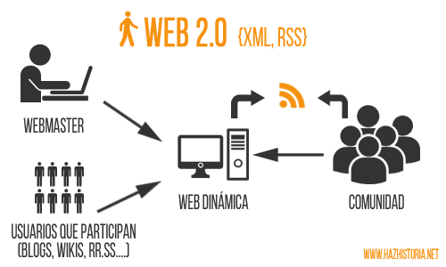
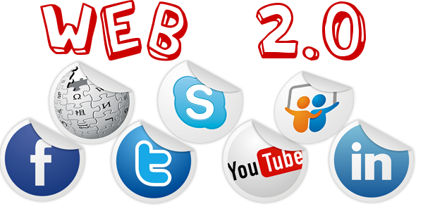

| Logros |
Aconteciomientos |
Imagenes |
Referencias |
| Internet |
*Conocida como la era militar de la informática ya que los primeros ordenadores fueron ocupados para aplicaciones militares y fue relevante en criptografía. Unos los esfuerzos mas significativos fue llevado a cabo por Alan Turing que es considerado como el padre de la informática.
*Se creo ARPAnet, ya que fue un precursor de internet, y financiado por estados unidos y fue destinada a sobrevivir un ataque nuclear y fue diseñada por una arquitectura totalmente distribuida.
*Era de negocios informáticos, en esta época se empezaron a usar las computadoras para inventarios y nominas... pero estas a su vez tenia precios demasiado elevados.
*Se concibió la idea de la www (World Wide Web), lo que dio lugar a la era de la web 1.0, en esta era se creo el primer sitio web |
 |
|
https://www.internetsociety.org/es/internet/history-internet/brief-history-internet/
https://www.fib.upc.edu/retro-informatica/historia/internet.html |
| web1.0 |
Paginas estáticas
*Tecnología Ajax muy utilizada por Google.
*Una de las cosas mas importantes en cuanto a la computación en la nube fue la computación elástica en la nube o EC2 de Amazon que fue puesta a disposición al publico.
*Páginas Web estáticas de sitios Web |
 |
 |
https://es.wikipedia.org/wiki/Web_1.0 |
| web2.0 |
*HTML5 fue liberado, y fue estandarizado, lo que ayudo a crear mejores experiencias de usuario. También el numero de dispositivos móviles conectados supero al numero de personas en el mundo.
*La evolución de Internet hacia la Web 2.0 o Web social se produjo con la llegada de una nueva generación de tecnologías y aplicaciones interactivas online que permiten la fácil publicación, edición y difusión de contenidos, así como la creación de redes personales y comunidades en línea.
*En realidad, y aunque existe bastante confusión entre la literatura sobre la semejanza y/o diferencia entre Web 3.0 y Web semántica ambos conceptos denominan una misma realidad. |
 |
 |
https://sites.google.com/site/web20lasherramientas/caracteristicas-de-la-herramientas-de-la-web-2-0 |
| web3.0 |
* Así mientras la Web 2.0 está gestionada por el propio usuario humano, la Web 3.0 (que incluye la Web semántica, orientada hacia el protagonismo de motores informáticos y procesadores de información que entiendan la lógica descriptiva en diversos lenguajes más elaborados de metadatos, utilizando software avanzado como el RDF/XML), gestionada en la nube o cloud computing y ejecutada desde cualquier dispositivo con un alto grado de viralidad y personalización
*se centra en ofrecer un comportamiento más inteligente y más predictivo, de modo que podamos, con sólo realizar una afirmación o una llamada, poner en marcha un conjunto de acciones que tendrán como resultando aquello que pedimos, deseamos o decimos.
*e hace mención de la evolución de laweb 3.0 a la 4.0
*Nos permite manipular y/o trabajar con la Computación en la nube |
 |
 |
https://es.wikipedia.org/wiki/Web_3.0 |
| web4.0 |
*Comprensión del lenguaje natural y técnicas de speech to text.
*Uso de información de contexto del usuario (sentiment analysis, geolocalización, sensores.)
*Nuevos modelos de comunicación máquina-máquina (M2M). |
 |
 |
https://www.paradigmadigital.com/dev/web-4-0/ |